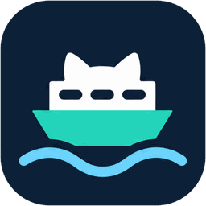

Your work in client repos, tracked in your own Linear
Linear's GitHub integration syncs only repositories whose organization is connected to your workspace, and a client's usually isn't. ferryGL fills that gap: with just your own GitHub account and Linear API key, it copies the issues and pull requests you work on into your Linear workspace, and keeps their status up to date.
pipx install ferrygl
$ ferrygl sync acme/api#252 issue update ENG-7 Todo -> In Review acme/api#335 pr link -> ENG-7 acme/api#348 involved adopt -> ENG-9 3 changes (1 adopt, 1 link, 1 update). Run with --apply to make them. $ ferrygl sync --apply … Applied 3 changes (1 adopt, 1 link, 1 update).
Store shared configuration once #252
Why ferryGL
Their GitHub, your Linear
Your GitHub account contributes to repositories that belong to another organization: a client, a partner, an open-source project. Your team tracks its work in its own Linear workspace.
Linear's GitHub integration can't bring that work across. So you copy issues and pull requests into Linear by hand, or spend AI tokens to have an agent do it. ferryGL does it for you, with neither.
Linear's GitHub integration needs the client's admin
One of the client's organization owners or repository admins has to install it for your workspace.
One organization, one workspace
A GitHub organization can connect to only one Linear workspace. If the client uses Linear, it's connected to theirs, not yours.
An AI agent can do it, for tokens
An agent such as Claude spends tokens on every run, rereading the same items and repeating the same moves, and may not do them the same way twice.
ferryGL needs no admin and no tokens
It runs with your own GitHub account and Linear API key, only reads from GitHub, and follows fixed rules. Keep your agent's tokens for work that needs them.
What it does
Every item you're part of, tracked once
Each time you run it, ferryGL brings Linear in line with your work on GitHub.
Finds your GitHub work
Issues you created or are assigned to, pull requests you opened, and other people's pull requests you're assigned to, reviewed, were asked to review, or wrote commits for.
Gives each item one Linear issue
Assigned to you and linked back to GitHub. A pull request you open for one of your issues joins that issue's Linear issue, so an issue and its fix are tracked once.
Keeps the status in step
Statuses move as the work moves on GitHub: drafts, reviews, merges and closes. The status names are configurable.
Status rules
Statuses that follow GitHub
Linear moves when something changes on GitHub. Between changes, an issue stays where you put it.
On GitHub, then in Linear
- Issue open, or your review is requestedTodo
- Pull request in draftIn Progress
- Pull request open, or you've reviewed itIn Review
- Pull request merged, or issue closed as completedDone
- Pull request closed unmerged, or issue closed as not plannedCanceled
An issue's Linear issue follows its pull request until the issue itself is closed. The sync rules cover every case.
An issue and its fix, tracked once
You're assigned acme/api#252, and open acme/api#335, whose description says “Part of #252”.
-
ferryGL creates one Linear issue, “Store shared configuration once #252”, and links both GitHub URLs to it.
In Review -
#335 merges while #252 stays open. The work isn't done until the GitHub issue is closed.
In Review -
#252 is closed as completed.
Done
How it works
A command you run, not a service you host
Run ferryGL by hand or on a schedule. It has no server and no database.
GitHub
Read-only searches, with your own token

ferryGL
Plans the changes on your machine, and shows them before making them
Your Linear
Issues assigned to you, with your personal API key
-
Read GitHub
For each route in your config (some repositories and the Linear team they go to), ferryGL searches GitHub once for each of your roles.
-
Look up Linear
It finds the Linear issues it made before by their links to GitHub, and looks for one of your issues in the route's team that already mentions the item.
-
Plan
It compares GitHub with Linear and lists the changes: create an issue, link one, or move a status.
-
Apply
With
--apply, it makes those changes in Linear. Without it, nothing is written.
On each Linear issue, ferryGL records the last GitHub state it acted on, in the metadata of the GitHub link. That's how it tells whether something changed since the last run, and why it leaves your own edits alone.
Safety
Safe in repositories that belong to someone else
Private repositories often belong to a client, and their contents may be covered by an agreement. ferryGL is careful by default.
Read-only on GitHub
It only sends read queries, and never comments, labels or changes anything there. A read-only token is enough.
Preview first
ferrygl sync only shows what it would do. ferrygl sync --apply does it.
Your edits win
A status moves only when something changes on GitHub. If you move an issue by hand, it stays where you put it.
Only your issues
It changes only Linear issues assigned to you, never a teammate's, and never deletes issues or links.
Little is copied
Titles, numbers, repository names, links and states. Descriptions only if you turn them on. Never GitHub comments or other people's names. Its own comments, off by default, name only GitHub items, states and statuses.
Safe to rerun
It finds what it made before by its links to GitHub, so running it again, even after a run that stopped halfway, never creates duplicates.
Quick start
From install to first sync
You need Python 3.11 or later, a GitHub account that can read the repositories, and a Linear workspace.
-
Install ferryGL
With pipx, as here, or with
uv tool install ferryglorpip install ferrygl.$ pipx install ferrygl -
Connect your accounts
Sign in with the GitHub CLI, and create a personal API key in Linear's Security & access settings.
$ gh auth login $ export LINEAR_API_KEY=<your key>
-
Write a config file
Save it as
~/.config/ferrygl/ferrygl.toml. A route sends some repositories, or every repository of an owner with"acme/*", to one Linear team.[[route]] repos = ["acme/api", "acme/web"] team = "ENG" # Linear team key or name [sync] since = 2026-09-01 # skip items not updated since
-
Check, preview, then apply
checkconfirms your credentials, repositories and Linear setup.syncshows the plan. Nothing is written to Linear until you add--apply.$ ferrygl check $ ferrygl sync $ ferrygl sync --apply
Documentation
Everything in detail
Setup, every setting, and exactly how ferryGL decides what to change.
Getting started
Install, set up the two credentials, and do a careful first run.
Configuration
Every setting in ferrygl.toml, with its default, and checks in your editor.
Sync rules
Which items are synced, how they map to Linear issues, and how statuses move.
Commands
Reading the plan, exit statuses, running on a schedule or from VS Code, and fixing errors.
Data and privacy
What ferryGL reads, what it writes to Linear, and what it keeps.
Architecture
How a run works inside, request costs, retries and limits.
What it doesn't do
ferryGL does one job: it keeps your own Linear issues in step with your GitHub work.
- Write anything to GitHub.
- Sync both ways, or keep descriptions and comments in sync.
- React instantly. There are no webhooks: Linear catches up each time ferryGL runs.
- Sync every issue in a repository for a whole team. Linear's GitHub integration does that when you can install it.
Stop copying client work into Linear by hand
Install ferryGL, preview the first sync, and keep your AI tokens for work that needs them.